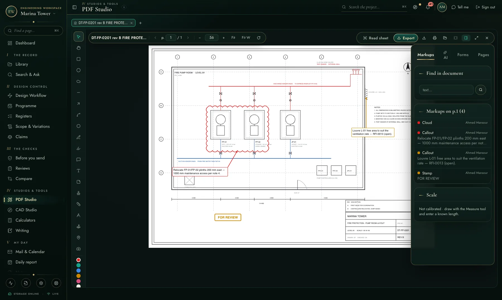
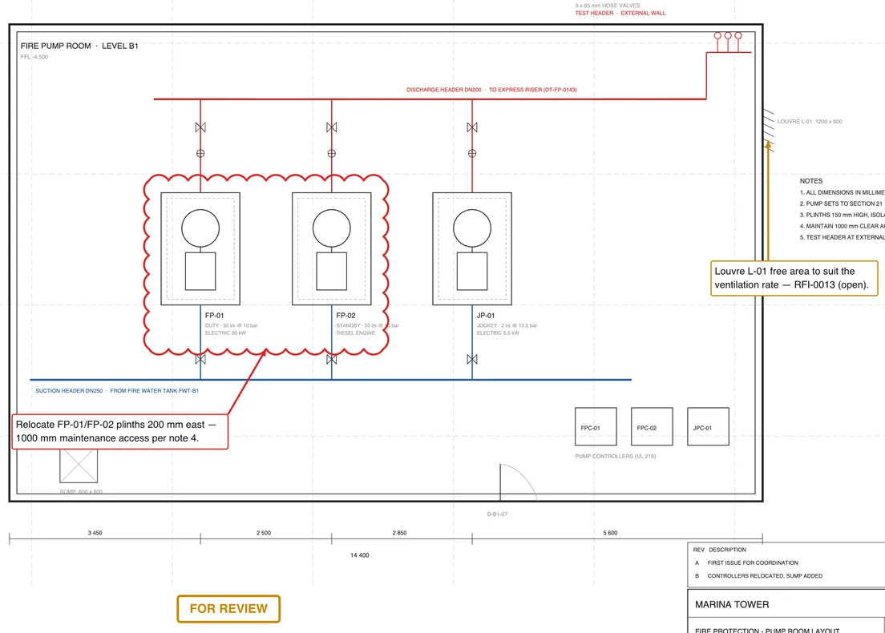
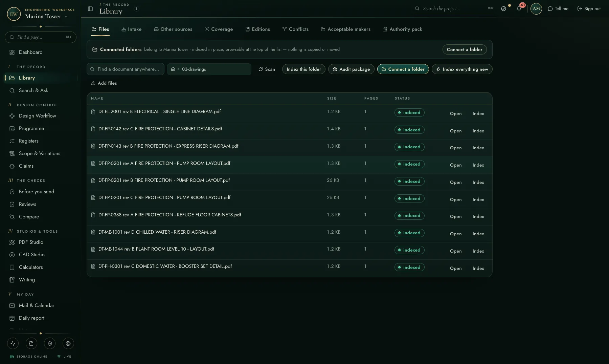
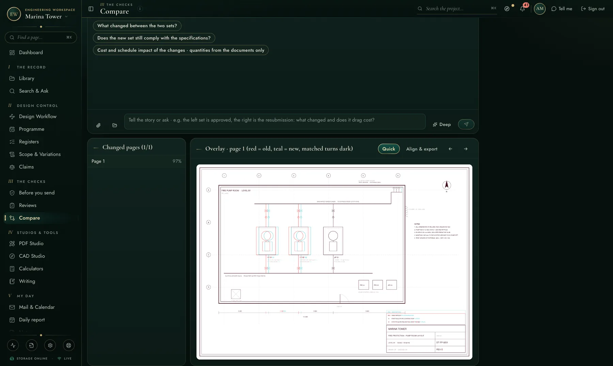

Drawings are where engineering actually happens. The Studios bring markup, CAD and comparison into the same workspace as everything else — no desktop licences, no exports.
This is the PDF Studio mid-review: a revision cloud around the pumps whose plinths must move, callouts tied to the drawing's notes and the open RFI, and a FOR REVIEW stamp — all on the live sheet, listed in the markups rail, saved into the project record.


Comments carry their references — “Louvre L-01 free area to suit the ventilation rate — RFI-0013 (open)” — so the drawing conversation and the register stay one story.
Both studios share the workspace's file browsing: the project library, your OneDrive, your mail attachments, or a file from this computer. CAD Studio opens DWG/DXF directly in the browser.


The compare engine overlays two revisions and paints the differences — removed in red, added in teal — and runs automatically when a new revision is submitted on a workflow.
Every markup and drawing capability, named.
"The field" is the usual toolchain — the per-user construction cloud and the separate applications around it. Good tools; the difference here is one integrated record, on your own server.